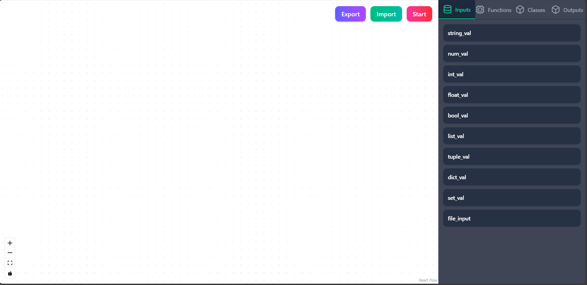

Typeflow Editor¶
The Typeflow Editor is a powerful visual environment for designing and orchestrating workflows.
It provides an intuitive drag-and-drop interface to create Directed Acyclic Graphs (DAGs) using your custom nodes, classes, and I/O components.
Launching the Editor¶
Once you’ve created and validated your nodes and classes, simply run:
typeflow start-ui
This command will:
- Start the FastAPI server
- Launch the Next.js-powered Typeflow Editor in your browser
You’ll see an interactive canvas with toolbars, side panels, and buttons to help you build workflows visually.
Editor Overview¶
Here’s the layout of the Typeflow Editor:
1. Sidebar (Left Panel)¶
The left sidebar contains tabs to organize all available building blocks:
| Tab | Content |
|---|---|
| Inputs | Parameters, constants, and user-defined input nodes |
| Functions | Your function-based nodes (created via typeflow create-node) |
| Classes | Class-based nodes (created via typeflow create-class) |
| Outputs | Terminal nodes that produce or save the final result |
Tip: Drag any node from the sidebar into the main canvas to add it to your workflow. Tip: For deleting node in editor, click on it and press DELETE/ DEL/ BACKSPACE key.

2. Editor Canvas (Main Workspace)¶
This is your primary workspace — where you drag and connect nodes to define the flow of data and logic.
Each node appears as a visual block. You can:
- Connect outputs → inputs
- Rearrange or rename nodes
- Inspect or edit parameters
Connections represent data dependencies — just like function pipelines in code.

3. Top Toolbar¶
At the top, you’ll find three primary controls:
| Button | Description |
|---|---|
| Export | Export the current DAG as dag.json (great for version control or sharing) |
| Import | Import a previously saved DAG to continue editing |
| Start | Compile and run your workflow directly from the editor |
Behind the Scenes¶
When you press Start:
- The editor sends your DAG JSON to the FastAPI backend
- Typeflow automatically:
- Compiles the DAG
- Generates
src/orchestrator.py - Executes it in an async subprocess
- Real-time logs & events stream back via Server-Sent Events (SSE)
Tips for Efficient Editing¶
- Keep related nodes grouped visually
- Use clear, descriptive node names
- Reuse validated nodes across projects
- Export regularly to avoid data loss
Example Workflow View¶
Here’s a complete image-processing workflow built in the editor:
- Load an image
- Resize it
- Convert to grayscale
- Adjust brightness
- Add watermark
- Save output image

Next Steps¶
Once your workflow is ready:
- Click Export to save
dag.json - Run these CLI commands to run in terminal:
typeflow compile
typeflow generate
typeflow run
Pro tip: Just hit Start in the Editor for instant execution with live feedback!
Summary¶
| Feature | Description |
|---|---|
| Visual Builder | Drag-and-drop workflow creation |
| Node Tabs | Organized inputs, functions, classes, outputs |
| Live Execution | Run workflows directly from UI |
| SSE Integration | Real-time logs and node status updates |
| Import/Export | Save or load DAGs easily |
Next: Learn how Typeflow executes workflows behind the scenes in Workflow Execution